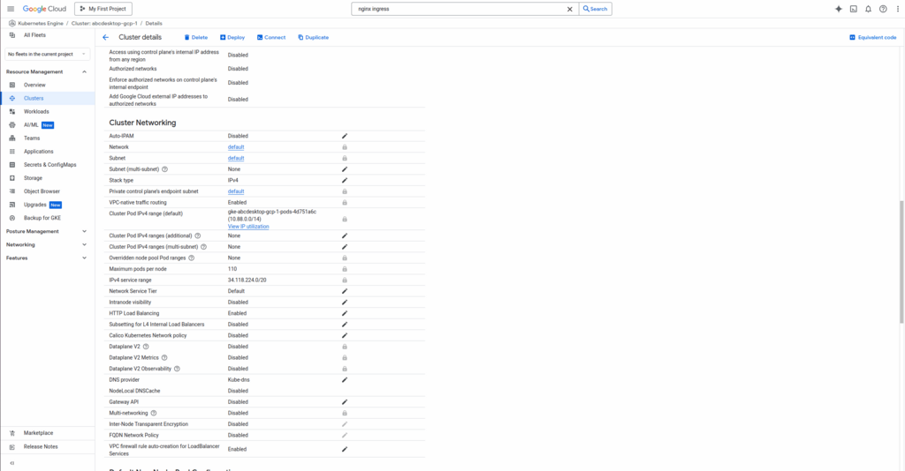
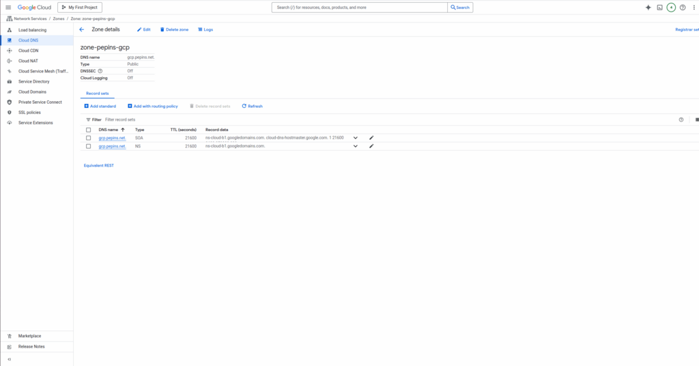
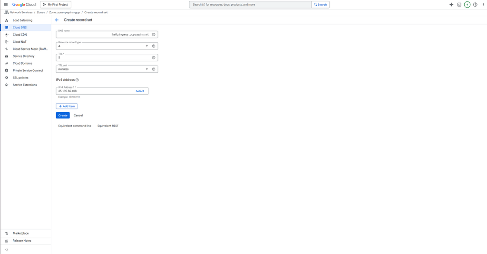
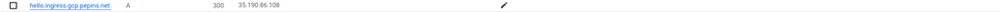
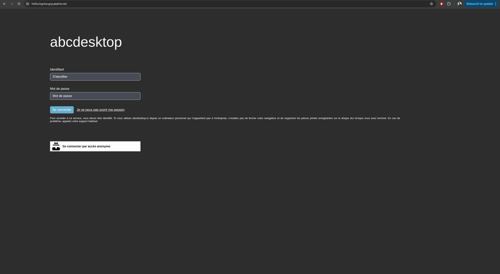
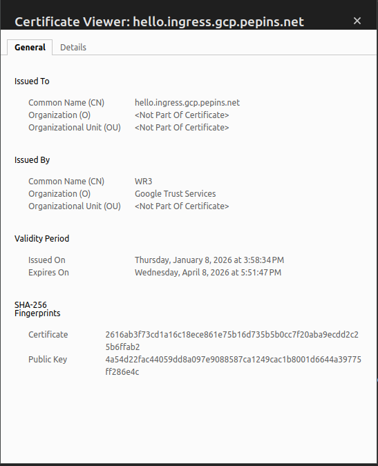

Publish your website as a public secured service
Requirements
- read the previous chapter deploy abcdesktop on GCP with Kubernetes
- a GCP account
- a domain of you own hosted on GCP
gcloudcommand line interface gcloud clikubectlcommand linewgetcommand line
To get more informations
- read the google cloud chapter install-gke-ingress-controller
Overview
In this chapter we are going to, use a gke-ingress-controller to host your abcdesktop service with a public IP Address, then configure dns zone file to use your own domain name, and activate TLS to secure your service.
Set up the GKE Ingress controller
In this example we will use the GKE built-in ingress controller. Before starting you may first need to check if the HttpLoadBalancing add-on is enabled on your cluster.
Go to your cluster page on the GCP console, then Networking, you should see HttpLoadBalancing as enabled, if not enable it and save your changes.

Create an ingress resource for GKE using the abcdesktop service and save it as abcdesktop_host.yaml
You need to update this manifest with your own FQDN, replace hello.ingress.gcp.pepins.net by your own values.
apiVersion: networking.k8s.io/v1
kind: Ingress
metadata:
name: ingress-abcdesktop
namespace: abcdesktop
annotations:
kubernetes.io/ingress.class: "gce"
spec:
rules:
- host: hello.ingress.gcp.pepins.net
http:
paths:
- path: /
pathType: Prefix
backend:
service:
name: http-router
port:
number: 80
As mentionned in the GKE ingress documentation, you cannot specify a GKE ingress using spec.ingressClassName, you must use the kubernetes.io/ingress.class annotation. We are using the gce class to deploy an external Application Load Balancer.
Apply the Ingress yaml file
kubectl apply -f abcdesktop_host.yaml -n abcdesktop
You should read
ingress.networking.k8s.io/ingress-abcdesktop created
Verify the ingress resources:
kubectl get ingress -n abcdesktop
The output looks similar to the following:
Wait fee seconds while the ADDRESS field is empty
NAME CLASS HOSTS ADDRESS PORTS AGE
ingress-abcdesktop <none> hello.ingress.gcp.pepins.net 80 4s
When you obtain an IP ADDRESS
NAME CLASS HOSTS ADDRESS PORTS AGE
ingress-abcdesktop <none> hello.ingress.gcp.pepins.net 35.190.86.108 80 3m14s
In the example above, the ingress resource tells gce to route each HTTP request that is using the / prefix for the hello.ingress.gcp.pepins.net host, to the route backend service running on port 80. In other words, every time you make a call to http://hello.ingress.gcp.pepins.net/, the request and reply are served by the echo backend service running on port 80.
Update your DNS zone file
We will associate your FQDN (Fully Qualified Domain Name) to the load-balancer's IP Address.

This screenshot describes the GCP network console. It shows the Domain informations, but you can manage your own zone file from your own registrar.
Create new record
In this example, we are going to create a new record hello.ingress (hello.ingress.gcp.pepins.net) to the A address 35.190.86.108. This IP Address is the load-balancer IP Address.
Press Add Standard button, to update your zone file with the new record

Then you should see your record on your domain page

From your local device, you can open a web browser
Web browser doesn't allow usage of websocket without secure protocol. To login you need
httpsprotocol.
As you can see, your website is Not Secured, we are going to add X509 SSL certificate to secure your service.
Enable HTTPS
Configure Google-managed SSL certificates
To enable HTTPS on our exposed service, we will use Google-managed SSL certificates as it is natively embedded in GCP and works well with a GKE ingress controller.
First you will create a ManagedCertificate object, copy the following lines in a abcdesktop_managed_certificate.yaml file.
apiVersion: networking.gke.io/v1
kind: ManagedCertificate
metadata:
name: abcdesktop-cert
namespace: abcdesktop
spec:
domains:
- hello.ingress.gcp.pepins.net
Then apply it to the cluster.
kubectl apply -f abcdesktop_managed_certificate.yaml -n abcdesktop
Now, you will have modify the previously created ingress file, and specify the managed certificate the ingress will use, in the annotations section.
apiVersion: networking.k8s.io/v1
kind: Ingress
metadata:
name: ingress-abcdesktop
namespace: abcdesktop
annotations:
kubernetes.io/ingress.class: "gce"
networking.gke.io/managed-certificates: "abcdesktop-cert"
spec:
rules:
- host: hello.ingress.gcp.pepins.net
http:
paths:
- path: /
pathType: Prefix
backend:
service:
name: http-router
port:
number: 80
Then apply it to the cluster to start the certificate generation.
kubectl apply -f abcdesktop_host.yaml -n abcdesktop
You can check that the provisioning started by running the following command
kubectl get managedcertificate -n abcdesktop
NAME AGE STATUS
abcdesktop-cert 30s Provisioning
After a few minutes, between 10 and 15, you will see that the status will change from Provisioning to Active.
kubectl get managedcertificate -n abcdesktop
NAME AGE STATUS
abcdesktop-cert 12m Active
Reach your website using https protocol
You can now connect to your abcdesktop desktop pulic web site using https protocol.

The status is secured and we get some informations from the certificate

Increase ingress connection timeout
By default, GCE type ingress has a connection timeout of 30 seconds, in our case, we doesn't want abcdesktop to drop the connection to our desktop every 30 seconds, so we will have to increase timeout.
Unlike a nginx type ingress, you cannot add annotations to the ingress yaml file to increase timeout value. You instead need to create a BackendConfig object that you will link to your routing service.
First copy the following lines in a backend_config_timeout.yaml
apiVersion: cloud.google.com/v1
kind: BackendConfig
metadata:
name: long-timeout-backend
namespace: abcdesktop
spec:
timeoutSec: 1800
Apply it to the cluster
kubectl apply -f backend_config_timeout.yaml -n abcdesktop
Then you need to create a service that will use this config, copy the following lines in a http_router_increased_timeout.yaml
apiVersion: v1
kind: Service
metadata:
name: http-router-proxy
namespace: abcdesktop
labels:
abcdesktop/role: router-proxy
annotations:
cloud.google.com/backend-config: '{"ports": {"80":"long-timeout-backend"}}'
spec:
type: NodePort
selector:
run: router-od
ports:
ports:
- protocol: TCP
port: 443
targetPort: 443
name: https
- protocol: TCP
port: 80
targetPort: 80
name: http
This new service has the same logic that the existing http-router service but uses the backend config we just created.
Apply it to the cluster
kubectl apply -f http_router_increased_timeout.yaml -n abcdesktop
Finally update your ingress yaml file to link it to the service we just created.
backend:
service:
name: http-router-proxy
port:
number: 80
Now wait a few minutes for GCE to apply the new configuration and reconnect to your desktop, the connection shouldn't drop after 30 seconds anymore.
NB : By using this method with GKE ingress controller, the reverse proxy does forward the client source IP to your cluster, so there is no additional manipulations to do for that.